Identità visiva / Linee guida / Settembre 2026
La tua casa, seguita da vicino.
Marchio Incastro, colore, illustrazione, sito, canali e oggetti.
La tua casa, seguita da vicino.
Marchio Incastro, colore, illustrazione, sito, canali e oggetti.


Due profili di casa: uno con il tetto in pendenza, come le case sui colli liguri, uno con l’arco di una porta. Si incastrano senza sovrapporsi: il proprietario resta proprietario, stella.casa entra per prendersene cura.
Il simbolo si legge anche in piccolo e in un solo colore.

Avatar corallo, simbolo compatto, simbolo minimo e favicon.
stella.casa · Il metodo · Diario
Parliamo della tua casaRichiedi un soggiornoOgni fase ha un campo di colore pieno. Pillole per navigazione, pulsanti ed etichette. Il gradiente vino → corallo resta alle copertine.
Outfit 600 / Titoli, numeri, etichette
La tua casa,
seguita da vicino.
DM Sans / Testi, interfacce, documenti
Font locali inclusi, licenza SIL Open Font License.

Plum e crema.
Grana da stampa.
Un solo corallo.
Il corallo compare solo dove entra la luce o si apre una soglia: una finestra, una porta, un percorso. Mai come decorazione.

Emozione e primo contatto: copertine, social, card della home.


Spiegare: metodo, guide, articoli, informazioni sulla casa.
Una famiglia per blocco. Si alternano nella pagina, non si affiancano nella stessa riga.

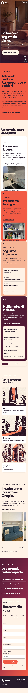
Pubblico: i proprietari.
Header a pillola che si forma con lo scroll.
Nome stella.casa sempre visibile.

Stella sul Mare / Richiesta con date e ospiti. Disponibilità e prezzo li conferma stella.casa.
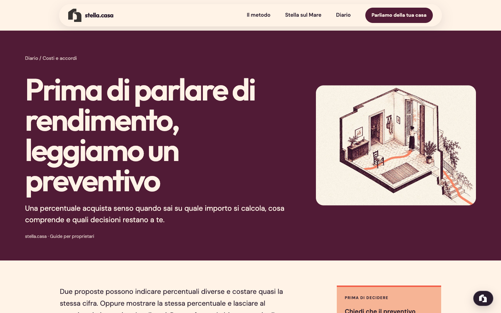
Diario / Guide per proprietari. Illustrazione di famiglia B in apertura.

Metodo / Quattro schede a passo: crema, corallo, pesca, vino.

Conoscere, preparare, seguire, chiarire i conti. Un gesto di scroll, una scheda.
Il quaderno della casa porta lo stesso linguaggio nel documento che il proprietario riceve.

Fotografia reale della casa pilota, campi pieni per le parole, illustrazioni con etichette crema. La firma Incastro chiude i post principali.
Formati: foto casa · frase su campo pieno · elenco su crema · illustrazione A · gradiente di copertina.


Una domanda, una spiegazione senza importi inventati, un rimando al Diario.

Story / Spazio libero per l’interfaccia.

Pagina Facebook riconoscibile: copertina illustrata A, post con testo che spiega cosa guardare.

Lettere da casa su Substack: banner B, articoli dal Diario, iscrizione nativa.
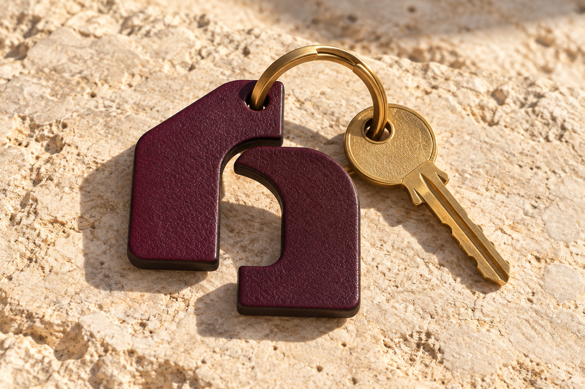
La sagoma del simbolo diventa il portachiavi. Sulla targa la casa tiene il suo nome, stella.casa firma la gestione.
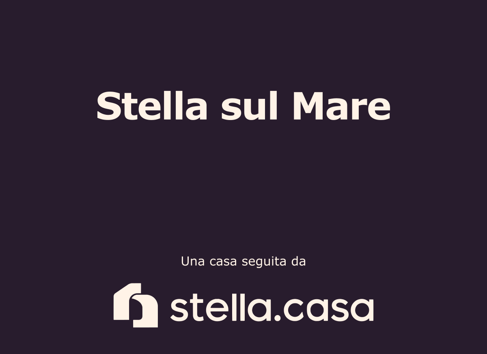
A sinistra: portachiavi in pelle. Sopra: targa, adesivo e file esecutivi.
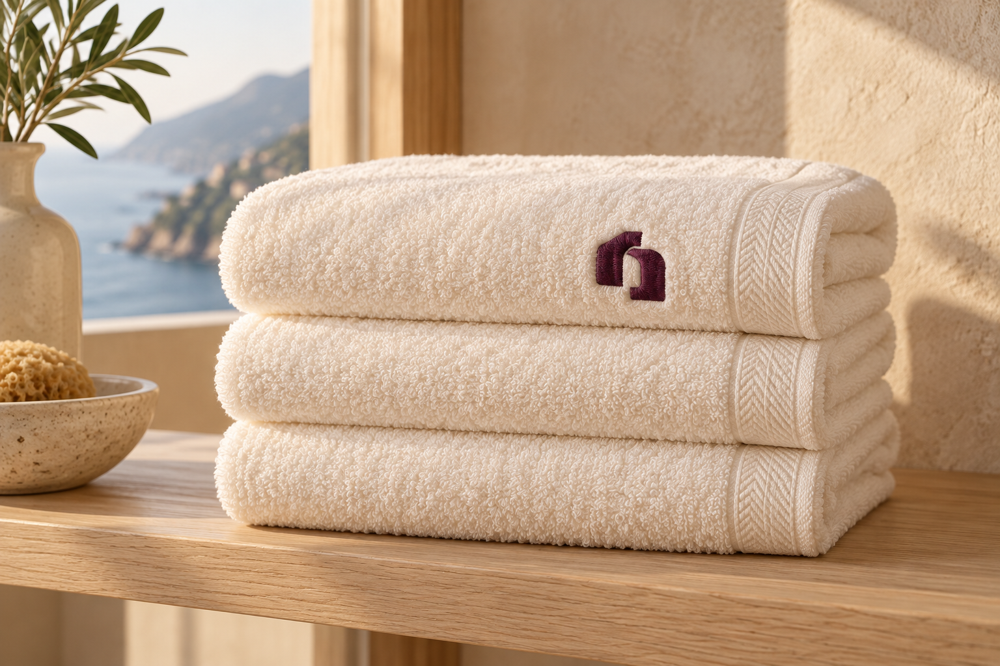
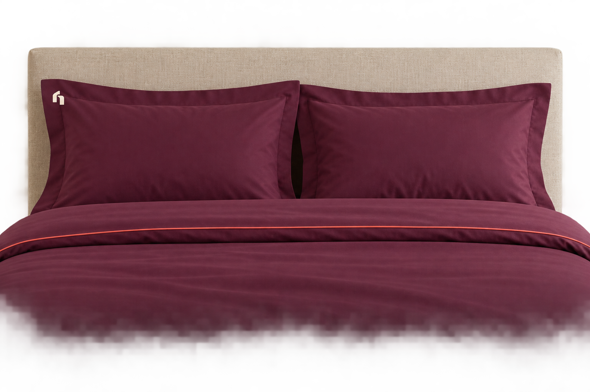
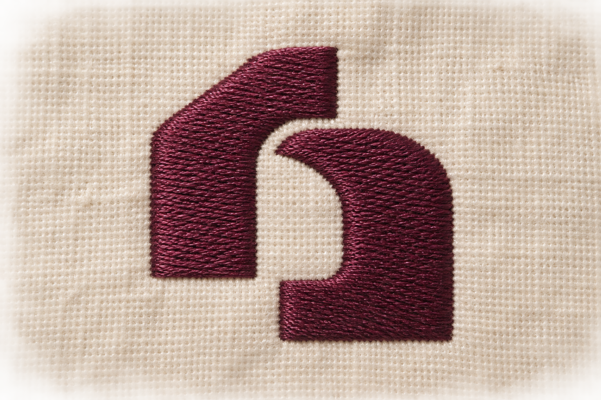
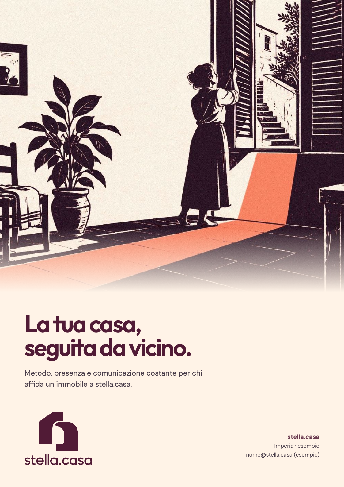
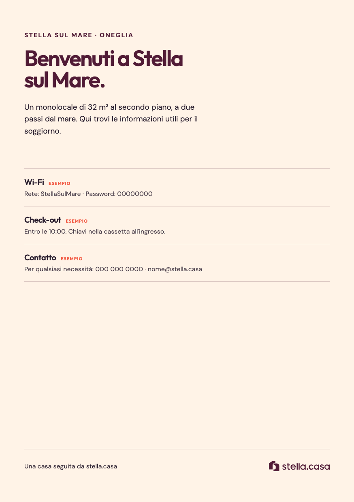
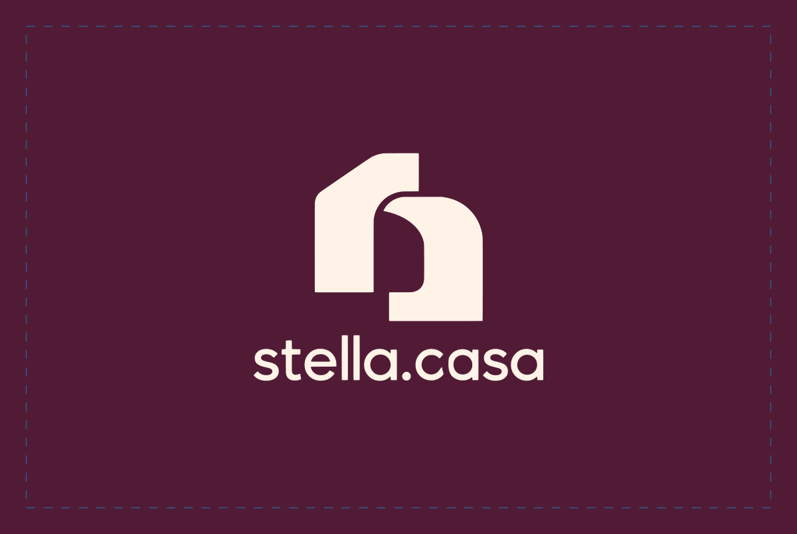
La proposta visiva e le applicazioni.
Le regole per riprodurla e ampliarla.
SVG in tracciati e PNG: marchio, firma orizzontale, simbolo, logotipo, avatar, favicon.
Sito completo in HTML, Instagram, Facebook, Substack, story, carosello, email, documenti.
Master SVG per carta, targa e portachiavi, font, token CSS e registro delle decisioni.